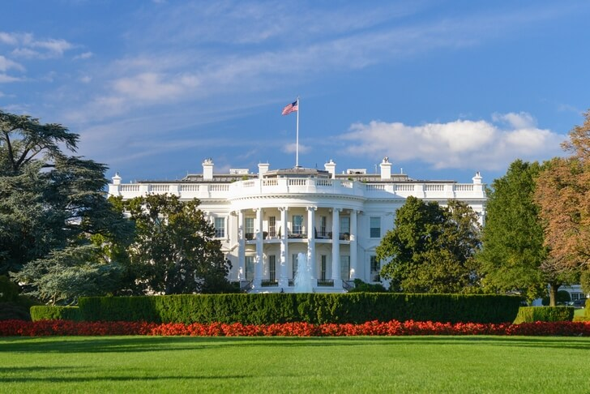
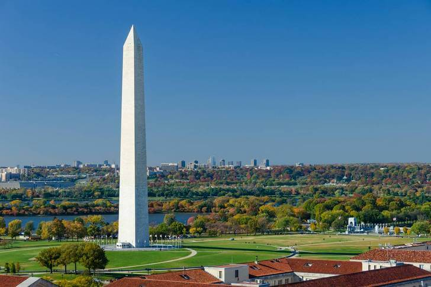
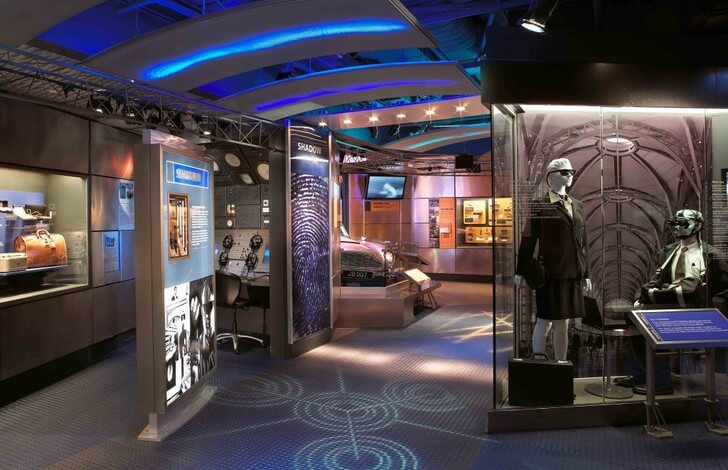

Вашингтон
Вашингто́н — город, столица Соединённых Штатов Америки. Официальное название — округ Колумбия. Чтобы не путать город с одноимённым штатом на северо-западе страны, американцы в разговорной речи обычно называют город «Ди-Си» или «Вашингтон, Ди-Си». Федеральный округ Колумбия является самостоятельной территорией, не входящей ни в один из штатов. Он был образован в 1790 году Актом о местопребывании[en] и включал город Джорджтаун, а также город Александрию (до 1846 года). Город Вашингтон был основан в 1791 году и назван в честь Джорджа Вашингтона, первого американского президента. В 1871 году города Вашингтон и Джорджтаун и округ Вашингтон были формально упразднены как самостоятельные административные единицы и объединены с округом Колумбия. Город расположен на северном берегу реки Потомак и граничит со штатом Виргиния на юго-западе и штатом Мэриленд со всех других сторон. Постоянное население города составляет свыше 600 тысяч человек[1]; из-за приезда жителей пригородной зоны во время рабочей недели оно увеличивается до одного миллиона. Население Вашингтонской агломерации, частью которой является город, составляет 5,4 миллиона человек; по этому показателю агломерация занимает восьмое место в стране.
Белый Дом
Белый Дом
С виду достаточно скромное белое здание, в котором располагается администрация президента США. Особняк был построен в 1800 году при втором американском президенте Джоне Адамсе. Здание состоит из шести этажей (включая подвальный и цокольный). Два этажа занимает семья действующего президента, на остальных находятся административные помещения, залы для приемов, обеденные помещения. Вместе с экскурсией можно увидеть исторические покои Белого Дома: Голубую, Зеленую, Красную комнаты и некоторые другие.
Монумент Вашингтон
Монумент Вашингтон
Гранитный обелиск из белого мрамора высотой 169 метров, поставленный в честь отца-основателя Д. Вашингтона. Он был построен в середине XIX века на пожертвования американских граждан и на средства частных организаций. Колонну окружают 52 шпиля с флагами американских штатов. На вершину монумента ведет лестница в несколько сотен ступеней, также для удобства и скорости оборудован лифт.
Международный музей шпионажа
Международный музей шпионажа
Довольно интересное место, где открываются некоторые секреты разведки и шпионской деятельности. Подобный музей есть только в США. В Консультативный совет входят бывшие функционеры ФБР, ЦРУ и даже советского КГБ. В коллекциях музея выставлены экспонаты, которые проливают свет на работу разведчиков. Отдельные экспозиции посвящены истории советской (и российской) разведки.